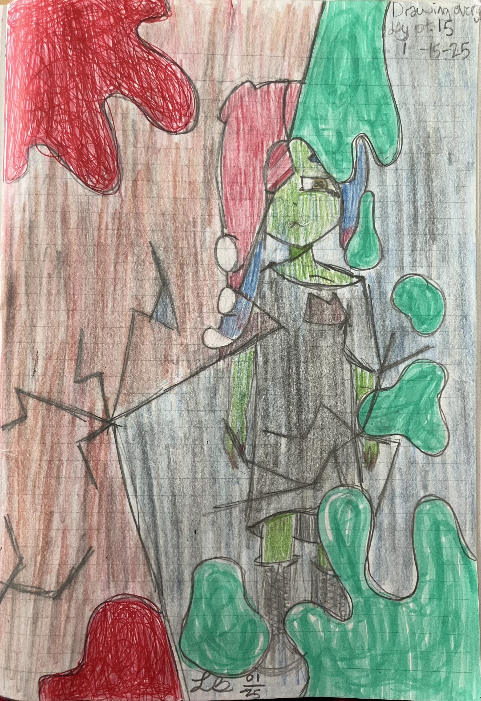
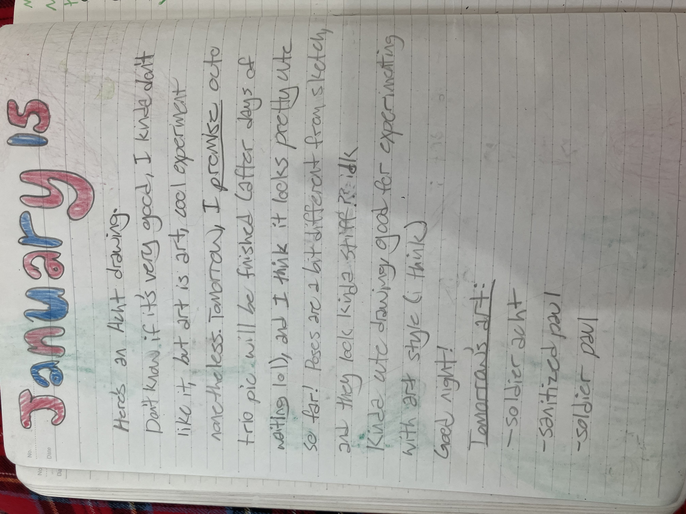
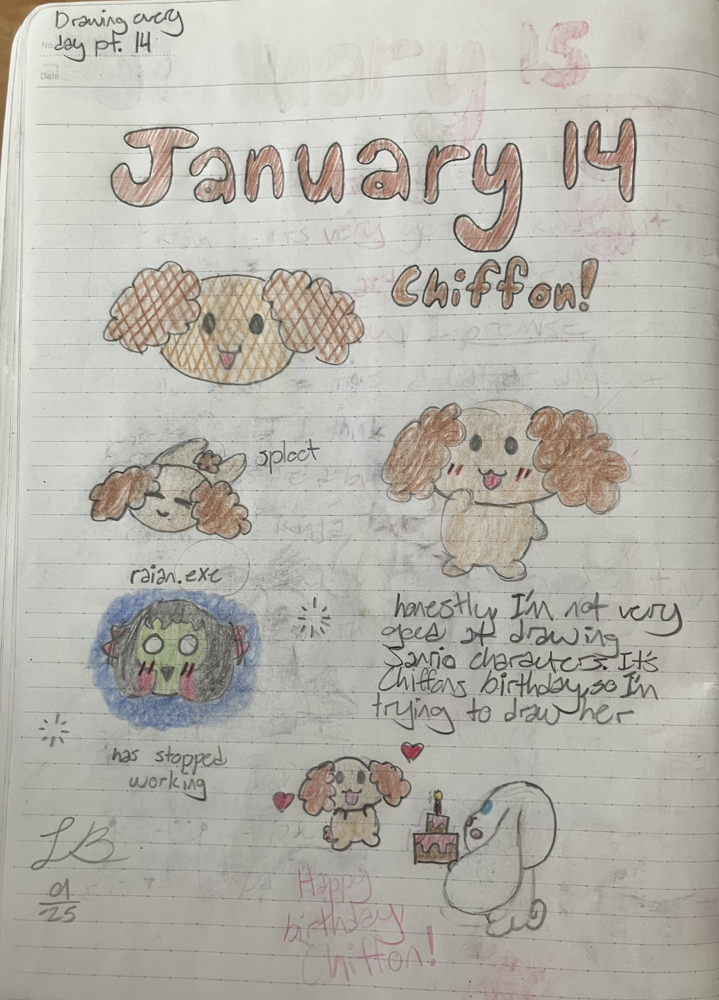
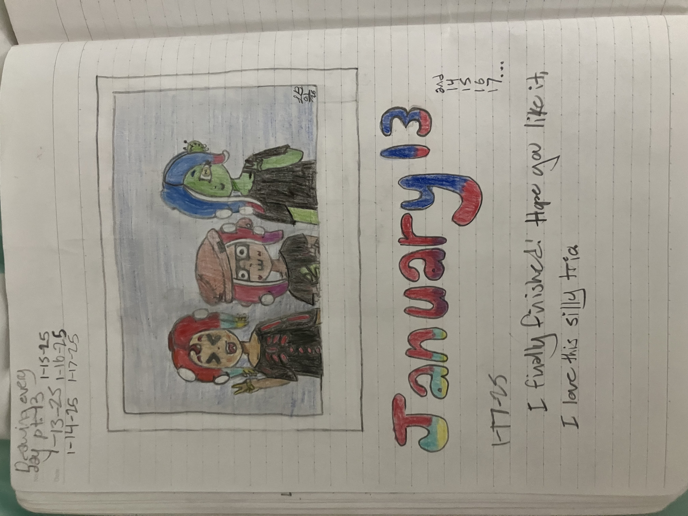
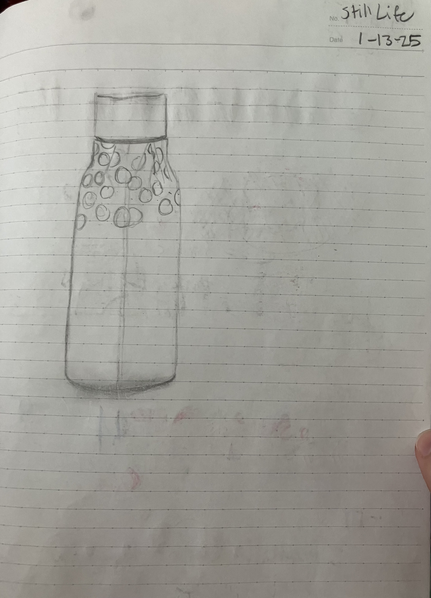
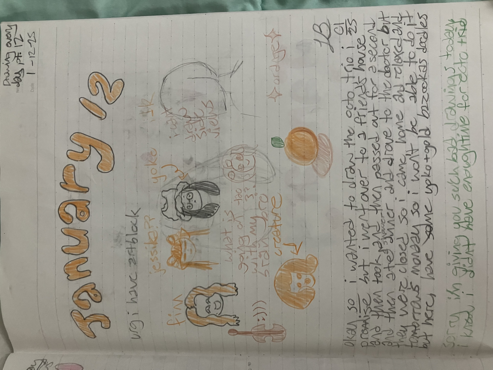
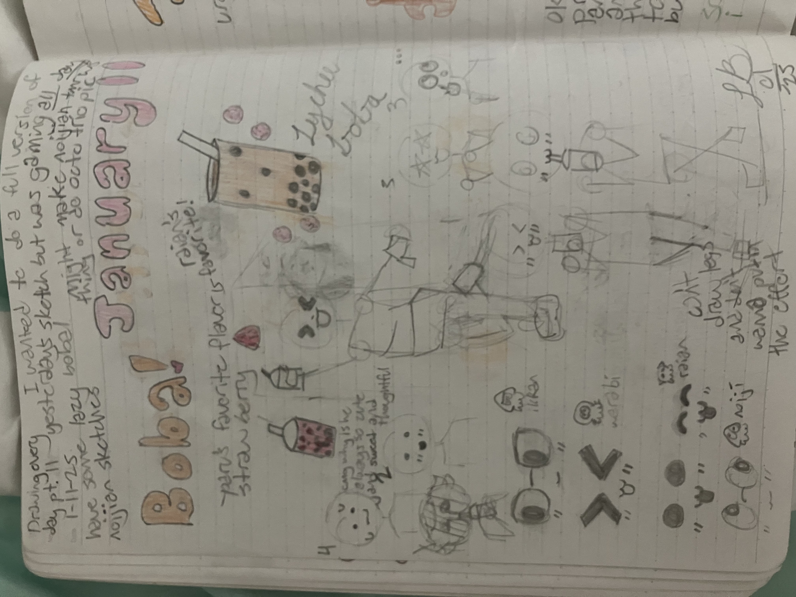

Ahhhhh, good old fashioned ship art of noiji and raian. Haven't done anything like this in a while. Raian's outfit is inspired by a cinnamoroll sweater vest i saw online that day, and i really liked it, and also I looked up aesthetics and attempted to determine raian's. in the last few months I stopped drawing anything related to the chirpy chips and my ocs (not very fond of any of their designs excpet maybe one) months ago in favor of working on my persona (yuri mentioned??)
sanrio x chirpy chips would be kinda fun to see. actually, splatoon had a sanrio fest in japan to determine the best sanrio character (betweeen hello kitty, cinnamoroll, my melody, and pompompurin). Don't recall the winner off the top of my head, but it wasn't cinnamoroll (sigh). I love cinnamoroll he's the best. and i guess i thought raian and cinna's vibes matched? i can't really see it as much now. I do remember trying to match the outfit to the things they usually wear (gave them pants and same flats as in the s1 album art). Anyway, enough about the fit.
The tweets (or squeets? get it? 'cause it's squitter?) are kinda cute. since there isn't a ton of personality for the splatband members (they get four sentences each in the artbooks that had to be translated into english by fans because nintendo hates us i guess), a lot of their dynamics are open to interpretation, and my interpretation is that paruko and namida totally ship noiji and raian. so that's the explation for the tweets. thought it would be a fun interaction i guess? (Upload date: 12-29/30-25)
January 17

behold the oft overlooked cousin of sigmarie... sigma callie. what would her name be? sigcallie? idk. also I realized a few days ago that this blog doesn't make any sense if you aren't already familiar with the obscure splatoon band members like i am 🙃 maybe one day, I'll draw something explaining who they are, but for now, go to splatoonwiki.org, aka inkipedia my goat. This has been there whenever I needed a reference for drawing, to look up a lore fact, check a splatfest date, or scroll for ages and learn about all the random japanese crossover splatfests (they did crossover fests with sanrio, chocorooms, pocky, and a manga called squid girl!)
So yeah, inkipedia rules. Anyway, back to the drawing. The top was supposed to be colored pencil drawings of all the agents, but past me decided to just use colored pencil and not sketch. That's why neo 3 looks... awful. Smallfry is better, but not by much. (i used a reference from inkipediaaaaaaaa~) bottom part is a bit of a comic with sigcallie
Oh my, she looks so different.. Also the whole comic is kinda supposed to be like the various inkfishs's reactions to sigcallie, ranging from "literally what am i looking at" to "lol ok" to "this is incredibly attractive". I ended up abandoning the top drawing and focusing on the bottom one, so that's why the page is mostly blank and sorta weird looking. (Upload date: 12-29-25)
January 15

waslfvblgiaerA> this is HORRIBLE yeah as i was drawing this i thought it looked bad... its meant to be like young acht being sanitized with like ink and shattered glass.
It would look WAY better with like a proper background and also the pose is really bad and stiff but i didn't really know what a better one would be.
hey i never did do soldier/sanitized paul that would be a cool concept. (Upload date: um idk when i originally started writing this description, but i finished it 11-11-25)
January 14

I have a Cinnamoroll calendar in my room, and it says when the birthdays of cinnamoroll and his buddies are so i drew chiffon (i only knew her name because of google translate bc this was before i knew katakana and could roughly translate katakana stuff on my own). This is one of the nicer birthday doodle pages in my opinion, it looks cute! Also drew some raian art so that adds to the cuteness hehe :3 I realized that the sploot (yes this is a word its a corgi thing trust me) pose is also a pose i drew yuri in last night! (Upload date: 7-26-25)
January 13

Hey there! It's been a while since I updated this! Just looked at the drawing I'm gonna write about and it took me SO LONG to finish. Also it looks awful now. Um, sorry me from January, that doesn't look as good as u thought it did. The poses are really stiff, and i had some better ideas (see jan 10) but my skill level wasn't at the point where i could draw stuff like that (aka i just had a skill issue). Also warabi's face is SO BAD. 💀 the good news about saying this is that it shows how much i've improved! Also side note i LOVE Paul, Acht, and Warabi's dynamic that's why i drew them. they're the best. well, one of the best. *cough cough chirpy chips forever cough cough* Bonus still life that i made during lunch on the 13th, though i mostly remember working on this during the morning during my digital creation class. (Upload date: 7-26-25)
January 12

Ah. This was the day I passed out. Ok I know what you're thinking don't freak out please it was actually very chill and I was fine. I passed out after I got out of the shower because of the temperature difference or something (think it's called vanovasal something-or-other) so that night i had to stay in my bed to draw and i couldn't sit at my desk. That, combined with artblock and no reference made for some... interesting drawings. They don't look bad because i passed out though, just to clarify. hehe these look so goofy :) (Upload date: 4-28-25)
January 11

January 10
January 9
January 8
January 7
January 5 and 6

January 4

January 3
January 2
New Year's Day

First Sketchbook of 2025!

Oh yeah I remember why these are just sketches even though it was a Saturday! (deadpan voice) I was gaming. Yeah, I was being a little gamer, probably playing roblox or something lol
But uh then i realized i had to draw and decided to do boba stuff. Uh then i went down a boba rabbit hole (erm is that a deco*27 reference??) and spent a lot of time looking at boba pics and trying to figure out what kind of boba the chirpy chips would like. Ok i just remembered this but the reason I drew this was because I thought of a splatoon fanart of shiver and frye getting boba together and that's what the bottom right sketch is (haha the can't draw legs thing is still so real) and I made expressions bc the right sketch was like a template that u could use for different ships (personally i'm a noijian and ikkabi shipper) and to explain the other third of the page. That's a sketch for a noijian comic where Noiji brings Raian boba and raian thinks its really sweet that Noiji remembered his favorite kind of boba. (Upload date: um I finished writing the desc on 4-28-25)
Acht! I could not figure out what pose to draw them in, so I just went for a basic thousand-yard-stare-into-the-distance-please-help-me-im-trapped-in-an-elevator-with-a-bunch-of-lesbians pose. Uh there's also some sketches of Paruko's outfit because i felt bad for abandoning her. Also a sketch of what became the Jan 13 drawing! The expressions are my fave part ngl- i also ended up simplifying the poses cause i can't draw lol (Upload date: 4-26-25)
Love how every time I go to write the description of these, I forget what the original drawing is bc the file name is just the date and then I look at the image on the site and then I instantly remember what I wanted to write about the silly drawing. This drawing was my first time drawing Warabi! He's such a silly goober, but we gotta give him angst too hehe otherwise... um idk i just like giving silly goobers angst. don't worry non-silly-goobers, you'll still get lots of angst too. :D
I couldn't remember what Warabi's outfit looked like, so I drew a younger version of them in a school uniform because i love the splatoon school uniform. a lot. Also gave him the detail of only one piercing on his tentacle because he's younger than he is in the S2 album art. Oh yeah there's another autism creature because paul, paruko and raian weren't enough autism creatures. i needed more. ALSO the digital warabi thing i mentioned in the art was a redraw of the cover of "mochi mochi", a vocaloid song from Tak that I was super into at the time (i still know the dance!) um i didn't actually get very far and ended up abandoning it hehe... Um also final detail I headcanon he/they pronouns for Warabi so sorry if any of this text was confusing. I'll prolly put links to my headcanon and fanfic google docs eventually hehe um this is my reminder to find out how to do that (HEY FUTURE YURI GO DO THAT IF U HAVEN'T ALREADY PLZ :3) okay i'm done talking to myself in the future byeee XD (Upload date: 4-24-25)
I like this one! I wasn't sure what to draw, so I just drew whatever popped into my brain which was um mostly noiji and raian hehe. We have Noiji the vending machine creature and Raian trying to coax him down, silly noiji, raian as the autism creature (it's just so silly X3) and Smokeegangle (i was kinda into smokeebee at the time and I still watch her shorts she's just so silly). My thought process there was honestly just "hey... gangle wears a mask, and so does Smokeebee.... what if...?" and then I drew that. (Upload date: 4-24-25)
Ah, the Sanrio collab. This was drawn the day the Sanrio collab with Project Sekai came to the global server, and this drawing was my way of praying for the Cinnamoroll and Emu card. Unfortunately, I had like 20k crystals saved up and Emu did not come home. However, I was able to scrounge up another 3k crystals for a ten pull. SO, I prayed to Miku-chan for Emu and pulled. I got TWO four stars from that pull, the Miku/Hello Kitty card and the Airi/My Melody card, but no Emu. *sigh*
Also I KNOW these drawings are kinda really bad just don't look at the hello kitty that I drew without reference and your eyes will survive looking at my months-old-drawings. (Upload date: 4-24-25)
Okay SO. the story with this was I wanted to make a really cool big drawing and I thought it was okay if I didn't write the date in bubble letters because it was for a big *cool* drawing. I didn't end up finishing that day, so I figured I could just finish the rest the next day and call it the daily drawing for both days. After I didn't finish again and got a bit frustrated with the skirt and then erased it and didn't wanna redraw it I just moved on. Wait i just looked at the pictures and realized that I already explained all of this. That's okay, I'll still keep this in hehe. (Upload date: idk but i wrote the description on 4-15-25)
Waitress Paru fit stuff. Yeah i could totally draw this way better now cause like i actually *know* how to draw pleated skirts now lol. (Upload date: um i wrote part of this description on 4-15-25 and i don't remember when I wrote the rest)
SO. I really like the Chirpy Chips, right? I also really want them to be the idols in Splatoon 4, so i made a bunch of custom splatfest themes for them, and i picked their teams too, and I was gonna make art and outfits for them but um it turns out i dont have the time or motivation to do that hahah
But I did make waitress Paruko (um sort of. Maybe I'll do a redraw of that eventually? Yes. let's do that. Ferb, I know what we're going to draw today), which would be her outfit for the Ketchup vs. Mustard splatfest (she's on team mustard because she likes to put it in her strawberry shakes) also some of the stuff I wrote there is a lie. my updates did NOT get smaller after winter break, just bigger and more ambitious. *cries in so many post-it notes filled with lists of unfinished drawings help me please-* (Upload date: 4-8-25)
I wanted to draw Paul from Splatoon. I also wanted to color it, but it got pretty late, so the art and coloring were really rushed haha...
I also have some age headcanons for Murch (I still haven't finished writing all of Paul's lore yet, so there's definitely some gaps in there, but I want Paul and Murch to be friends) at the top of the page and some bonus acht in there because they're a really cool character hehe (thinks about my 3 pages of acht lore which is REALLY just a summary for a fanfic i wanna write hahahahAHAHAHAHAH (i dont have the time to write because im so behind ahhh)) Also, no hate to Murdoch Feeder, but also yes hate to Murdoch Feeder because i cant even remember what he looks like. that's just how forgettable he is. um sorry to any bottom feeders fans they are definitely not my favorite splatband partially because they look so hard to draw urgh (Upload date: 4-8-25)
The first of my daily drawings! The rules I set for myself have since changed, but the concept has remained the same. (There's no way I'm ever doing this again tho)
Oh yeah, the inspiration for this came from the New Year's event in Project Sekai, where we could get a New Year's fortune based off of the groups in the game. The group I got was More More Jump, so I decided to draw Minori, also one of my favorite characters ^^ (sorry for the yap-fest lol i just didnt think i explained it well enough in the drawing) Um another thing about this is that I actually didn't think I would ever have a social media platform when I wrote this initially, but um now I have my own website! (Upload date: 4-6-25)
The cover of my first sketchbook this year! This is a recent photo, so it looks kinda beat up haha (Upload date: 4-6-25)